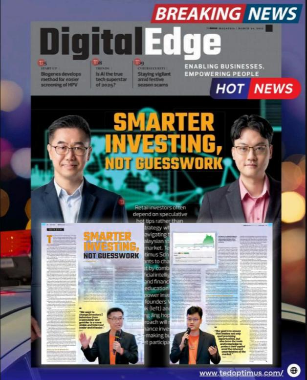
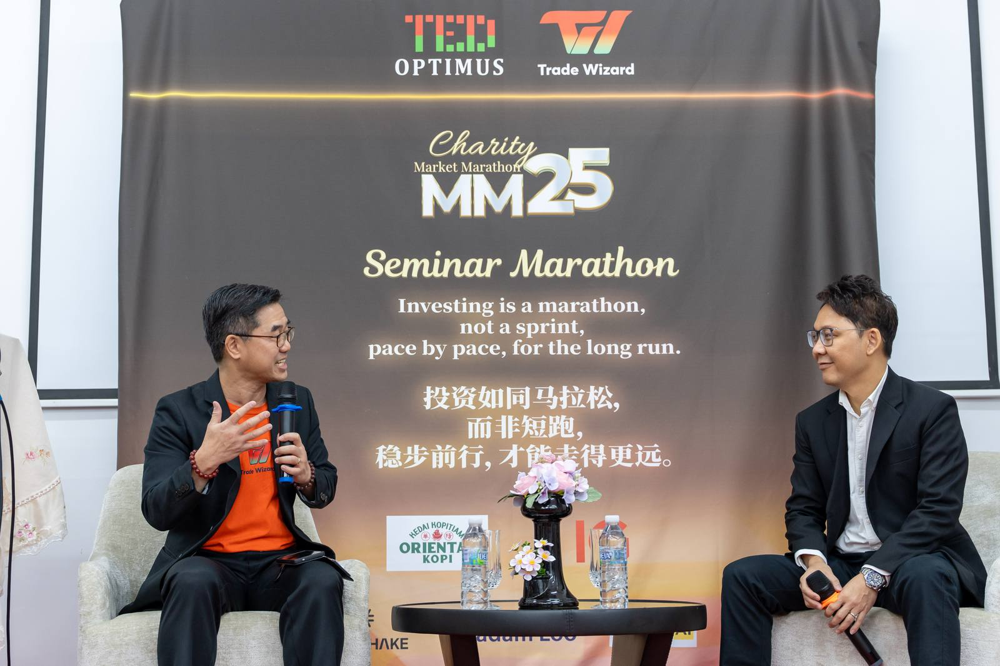

Major Media Features

Longest Non-Stop Bilingual Financial Investment Seminar
TED Optimus achieved a national record with Market Marathon 25 (MM25) — the longest non-stop bilingual financial investment seminar, held on 12 & 13 October 2025.
This record-breaking event showcased TED Optimus's commitment to making financial education accessible to all Malaysians, in both English and Chinese.
Award Acceptance Ceremony, November 2025

"Smarter Investing, Not Guesswork"
TED Optimus was featured in Digital Edge Malaysia with a comprehensive cover story on how the company is changing the way retail investors approach the Malaysian stock market.
The article highlighted Trade Wizard's AI-powered capabilities, the company's mission to empower 1,000 families to achieve RM1 million in equity value, and Warren Mak's unique background combining institutional experience with practical trading education.
Featured in Digital Edge Malaysia, 2024
See What We Teach — Free Webinar
Charity Market Marathon
"Investing is a marathon, not a sprint. Pace by pace, for the long run." — The MM25 Charity Seminar Marathon brought together traders, investors, and speakers for a non-stop bilingual financial education event.
TED Optimus x Trade Wizard, October 2025